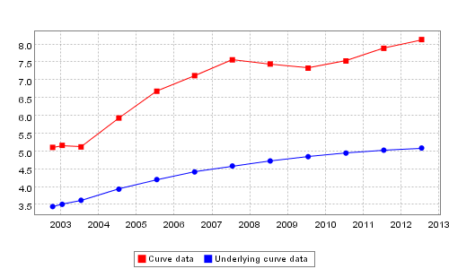

JFreeChart 0.9.3 - Servlet / JSP Enhancements (Updated Wednesday 4th September 2002)The latest release of JFreeChart (0.9.3) contains a number of new features that are designed for use in a servlet / JSP environment. The new features include:
There is a WAR file (jfreechart-sample.war) available for download which demonstrates the new functionality and should run on any JSP 1.1 compliant servlet engine. Read the documentation for your servlet engine on specific details of how to deploy a WAR file but basically putting it in the webapps directory and restarting the servlet engine should do it. Then go to http://your-server-name/jfreechart-sample to view the examples.
Alternatively take a look at ImageMapDemo1, ImageMapDemo2 and ImageMapDemo3 in the com.jrefinery.chart.demo package which can be run without a servlet environment.
Below is a static sample showing a chart with a fully functional image map that was generated by JFreeChart. I can't show a dynamic sample as I don't have an internet accessible servlet engine available to me. If anyone else does have the facilities and would like to host the demo WAR file that would be great. Sample Graph with href and alt tags I hope you find the new functionality useful. Richard Atkinsonrichard_c_atkinson@NO.SPAM.ntlworld.com Wednesday 4th September 2002 |